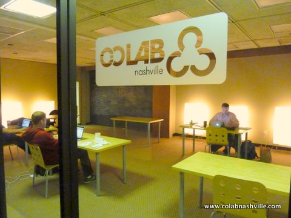
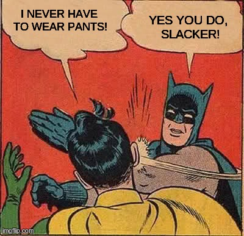
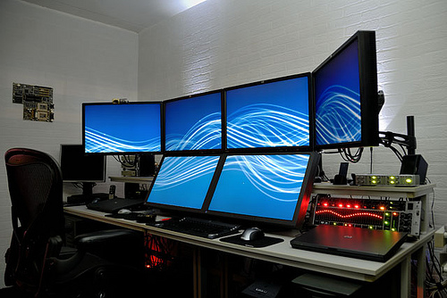
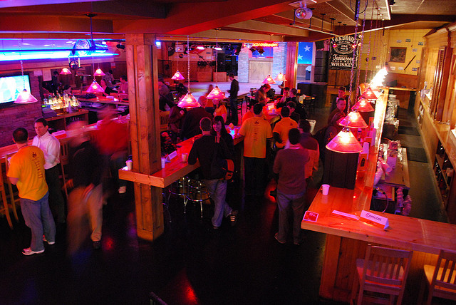
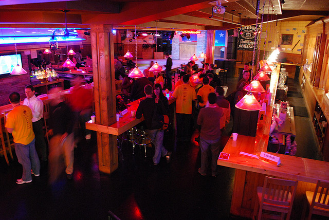

Remote Working
What is it?
Why bother?
Who's doing it?
What should I expect?
How do I manage these people?

Confession
Confession
-
5-20% of total US workforce, 8-30 million of 156 million total
(full-time, part-time, mixed-location, self-employed, contractors)
- Expected to jump to 43% by 2016
- 50% could work from home
- 79% say thet would like to
-
Typical telecommuter is college educated, salaried,
non-union, in management or professional role
http://www.globalworkplaceanalytics.com/telecommuting-statistics
Okay, but it's only small companies, right?
Confession


Confession
How do I manage these people?


Confession
Everybody watch out...

he uses Linux!

 

Kerry Woo Photography
Confession